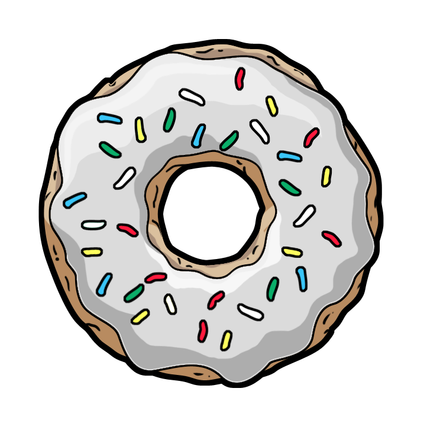

Hi, my name is Marc Adrian Jimenez, 17 years old, taking up Bachelor of Science in Computer Science specializing in Computer Networks. My nickname is Marc ,but my father calls me balong and currently, I'm a 2nd year student, and so far, I'm enjoying and crying about my current stay in APC. I enjoy what I do at school because the interest I have for my chosen course grows and grows everyday. Crying because everything that we do gets harder and harder every term, but I know that I can motivate myself to finish this course and continue living my life and trying again when I drastically failed in this path.


Even though our schedule is so jam-packed and busy, with quizzes almost every week and of course, we have to study to be prepared for any surprise quizzes, we stil need to give ourselves time to relax our minds, like 30 minute up to 1 hour breaks (in order to keep our sanity), and when those times come, these are what I do.
| Hobby | Description | Link |
|---|---|---|
| Watching Anime | My Highschool classmates introduced "Anime" to me, Japanese Animation, in short, its Japanese Cartoons. I really like watching anime because I enjoy the flow of the series and I also get to learn japanese words at the same time-- 2 birds, 1 stone. | KissAnime |
| Reading Manga/Manhua | I read manga beacause I can progress through a story faster than watching its anime version | MangaFox, MangaReader |
| Watching K-Dramas | I've recently been hooked to K-dramas. Why? Because the plot is not cliche as compared to Filipino Telenovelas. Also, I admire the complexion of the koreans, even though they're 30+ years old, their skin is so flawless. | KissAsian |
Social Media
- this made everything, especially connecting with your special ones easier. In this generation, everything totally rotates around the cloud, everything that is not connected to the cloud may be considered worthless. In Social Media, you can catch up with the world, trends, news and gossips are just sitting there, waiting to be accessed, so why not take advantage of it?
Music
- I enjoy listening to rock music, I may not look like that "emo rock weirdo", but I am. Listening to the melancholic and deep lyrics will really slap you with empathy, understanding the lyrics, along with the perfect melody will really put you in the singers place. Being abused and wanting to stand-up but you whatever you do, you just cant -- thats reality for me. But whatever the lyrics says will not haunt and dwell within me, because I know that when I try to stand-up and failed, I would just try and try until I succeed because there is nothing else I can do productive in my life, people should just keep on trying and trying until they can, and thats the effect of music in me.